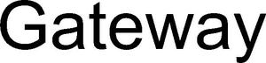

Trade Mark Journal No.2025/013 28 March 2025
WO0000001832444 (16,35)
Office of origin: Germany
Date of International Registration:1 October 2024
Date of designation in the UK:
1 October 2024

International priority date claimed: 11 April 2024
(Germany)
- Class 16
- Drawing paper; paper; cardboard; masking paper; proofing paper; letter paper [finished products]; computer paper; graph paper; thick japanese paper [hosho-gami]; digital printing paper; paper stock; india paper; label paper; colorboard [colored paperboard]; fiber paper; facsimile transmission paper; fine paper; parchment paper; photocopy paper; glassine paper; paper containing mica; gummed paper semi-processed paper; wood pulp paper; carbonless copying paper; carbon paper; lining paper; adhesive paper; carbon paper; laser printing paper; luminous paper; translucent paper; opaque paper; imitation leather paper; stencil paper [mimeograph paper]; mulch paper; coated paper; oilproof paper; electrocardiograph paper; photocopy paper; laser printing paper; paper for recording machines; industrial paper and cardboard; photocopy paper; paper for use in the manufacture of wallpaper; pasteboard; waxed paper; parchment; postcard paper; reel paper for printers; calendered paper; acid-resistant paper; signboards of paper or cardboard; typewriter paper; synthetic paper; tracing paper; recycled paper; business card paper [semi-finished]; waxed paper; heat sensitive paper; heat transfer paper; waterproof paper; xerographic paper; magazine paper; onion skin paper; drawing materials and materials for artists; fluorescent paper; stencil paper [mimeograph paper]; japanese paper; calligraphy paper; crepe paper; art paper; papers for use in the graphic arts industry; craft paper; tracing cloth; rice paper; stencil paper [mimeograph paper]; papers for painting and calligraphy; transfer paper; bags and articles for packaging, wrapping and storage, of paper, cardboard or plastics; packaging material made of paper or cardboard; stationery and educational supplies; notepaper; writing paper; envelope paper; office paper stationery; headed notepaper; laminated paper; copying paper [stationery]; envelope paper; tracing paper; envelope paper; adhesives for stationery or household purposes; bookbinding material; binding materials for books and papers; cloth for bookbinding; binding strips [bookbinding]; fabrics for bookbinding.
- Class 35
- Advertising; business management; business administration; clerical services; wholesale and retail services, including via the internet, connected with the sale of paper, cardboard and goods made from these materials, decorative and artist's materials and supplies, printed matter, bookbinding articles, stationery and teaching materials; the bringing together, for the benefit of others, a variety of goods, namely; paper, cardboard and goods made from these materials, decorative and artist's materials and supplies, printed matter, bookbinding articles, stationery and teaching materials for third parties for presentation and sale purposes.
Reflex GmbH & Co. KG
Representative: Patentanwälte BUSCHHOFF HENNICKE ALTHAUS, Kaiser-Wilhelm-Ring 24, 50672 Köln, GERMANY